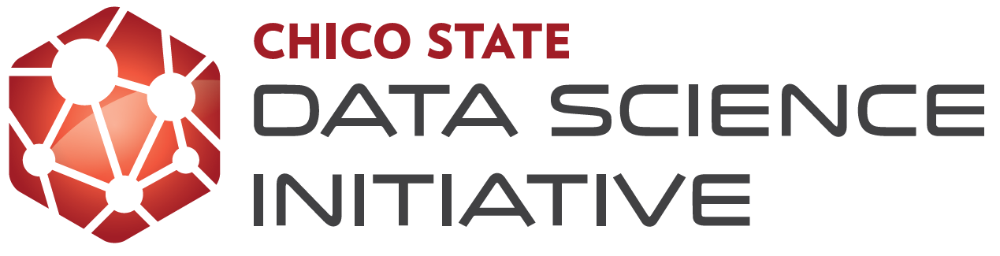
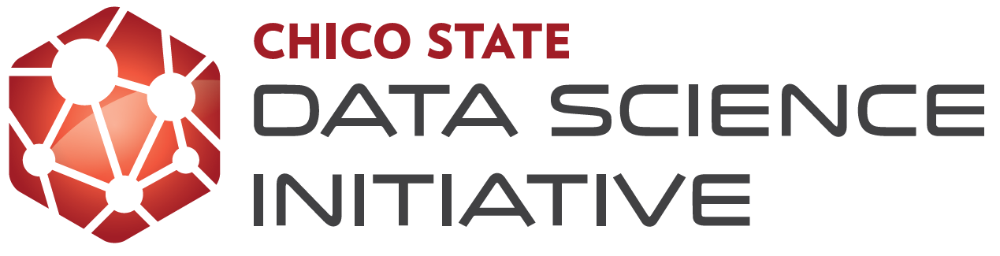

February presentations
The CSU Math Council Colloquia (MC\(^2\)) series provides CSU faculty in mathematics, statistics, and mathematics education with the opportunity to network and share best practices in any topics related to university level mathematics and statistics education.
Data Science across the CSU: Programs, Courses, and Literacy
These talks will afford a wonderful opportunity to learn more about how each of our campuses is embracing data science education as well as create opportunities for collaboration across the CSU.
Hosts:
- Andrew Schaffner, Professor and Chair; Statistics Department; Cal Poly, San Luis Obispo (aschaffn@calpoly.edu)
Friday, February 05, 2021 [Zoom Link][Recording]
| Time | Name | Affiliation | Title | Abstract |
|---|---|---|---|---|
| 3:00 PM | Roberto (Bob) Pelayo rcpelayo@uci.edu | UC Irvine | Three Models for Undergraduate Data Science Curricula | Data Science takes on many curricular forms at the undergraduate level. This diversity of pedagogical pathways reflects the versatility of the topic and institutional priorities. I am the Data Science advisor for the UC Irvine math concentration, and I previously created a cross-disciplinary Data Science program at the University or Hawai’i at Hilo. In this presentation, I will showcase three different curricula with which I’m involved: the UCI Math Data Science Concentration, the UCI (non-math) Data Science Bachelors of Science, and the UH Hilo Data science certificate program. Each of these have different flavors and emphases, and portray potential models for Data Science curricular development at other institutions. [Slides] |
| 3:30 PM | Hunter Glanz, Alex Dekhtyar, Dennis Sun hglanz@calpoly.edu | Cal Poly, San Luis Obispo | Cross-Disciplinary Studies Program in Data Science | As an inherently multi-disciplinary field, assembling a program in data science can involve many different constituencies and contributors. Consequently, ownership of the curriculum and participation in the courses could be unnecessarily complicated. While there are many successful degree programs in data science out there, we will discuss a newer and somewhat unique vehicle for such a wonderfully multi-disciplinary effort: the cross-disciplinary studies minor. [Slides] |
| 4:00 PM | Cristina Tortora, Bem Cayco, Guangliang Chen cristina.tortora@sjsu.edu | San Jose State | MS in data science, a joint work of the Statistics and Computer Science departments | Data science is multidisciplinary in nature, requiring specialized knowledge and skills from mathematics, statistics, computer science, and the business domain. Offering such a degree at SJSU aligns well with its institutional learning outcomes in preparing students with specialized, applied, and integrative knowledge and skills. The new MS in Data science program is designed to address the vast shortage of data scientists in today’s job market by providing a technically rigorous and balanced data science education that trains students with solid mathematical, programming, data management, predictive modeling, and communication skills. The program combines the existing resources of both the Department of Mathematics and Statistics and the Department of Computer Science at San Jose State University by harnessing a wide array of courses already offered by the two departments and a broad scope of faculty expertise in mathematics, statistics, computer science, and their intersection, machine learning. In this talk we will describe the new program, emphasizing the strengths and the aspects that are unique about our program. [Slides] |
Friday, February 12, 2021 [Zoom Link][Recording]
| Time | Name | Affiliation | Title | Abstract |
|---|---|---|---|---|
| 3:00 PM | Earvin Balderama earvin@csufresno.edu | CSU Fresno | Teaching Statistical Programming and Data Analysis with “Data Hospital” | Fresno State’s Statistical Programming & Data Analysis course is taken mostly by MATH-Stats majors and minors, although students from other majors, such as Physics, Engineering, and even Sociology, have also taken this class. The course uses R/Rstudio and covers introductory data science topics such as data visualization, data wrangling, text mining, simulation and modeling. In this talk, I will discuss one of my favorite in-class activities: Data Hospital. This activity is designed after a teaching hospital, where attending physicians lead teams of residents and interns to learn about and care for patients. Small groups of students are assigned to different data sets, and are responsible for presenting an initial analysis to the class, receiving feedback, then presenting final results the following week. This active learning exercise promotes critical thinking, collaboration and communication. Within an encouraging and supportive atmosphere, students “learn by doing.” I will also discuss how I implemented this activity during face-to-face instruction, and also virtually through Zoom. [Slides] |
| 3:30 PM | Alexander Chen achen@csudh.edu | CSU Dominguez Hills | Leveraging beginning programming to introduce data science | The mathematics department at CSU Dominguez Hills is in the process of introducing a data science concentration. Some of the challenges include introducing related courses and raising awareness of data science as a career option. To this end, we have taken the opportunity to leverage existing courses and pushing them toward a more data science-oriented direction. One example is our introductory programming class for secondary school teachers. In this course, which has traditionally focused on basic programming and technologies, we have incorporated more real-world problems and modeling to excite student interest and help them understand the context and importance of programming. At the same time, the course will encourage students to take more data science course options that are being introduced at the upper division. [Slides] |
Friday, February 19, 2021 [Zoom Link][Recording]
| Time | Name | Affiliation | Title | Abstract |
|---|---|---|---|---|
| 3:00 PM | Allison Theobold, Kelly Bodwin atheobol@calpoly.edu | Cal Poly, San Luis Obispo | Tools for Integrating Data Science in the Introductory and Intermediate Statistics Classroom | In this presentation we will share tools which we have used to integrate data science concepts into Introductory and Intermediate Statistics courses. We will discuss tools and activities which scaffold student’s learning of programming in R, namely shiny apps, learnr tutorials, RStudio Cloud, and downloading R and RStudio locally. |
| 3:30 PM | Robin Donatello rdonatello@csuchico.edu | CSU Chico | Data Analytics for Social Good: An introduction to DS for all Freshman | This talk showcases a new class at Chico State called “Data Analytics for Social Good”. Inspired by Data8 at UC Berkeley, and the Data Studies program at UC Davis, this class represents our first attempt at introducing the concepts of Data Literacy, Science and Analytics into the general freshman population. With low floor and high ceiling learning outcomes, we attempt to give the students a chance to not only wrangle and visualize data, but also to wrestle with the downstream implications that every choice made during data preparation, visualization and analysis can have on those impacted by the data results. Students will practice collecting and wrangling data into a usable form, visualizing large data sets to discover patterns, representing data in a meaningful way, exploring varying interpretations of the data and results, and discussing potentials for misuse and abuse. This course promotes critical reflection on the ethical, social, cultural, and political dimensions of data as well as providing direct hands on experience with both spreadsheets, and the programming language R. [Slides] |
| 4:00 PM | Judith Canner jcanner@csumb.edu | CSU Monterey Bay | Integrating Data Science Across the Curriculum | Since 2015, we have been working to integrate data science across the curriculum within the college of science. Now, as we move towards the establishment of a Data Science Minor at CSUMB, we need to think about how to bring data science into the curriculum across campus. Just as statistics finds its home in many programs and departments, we need to think about how to embed data science in psychology, health sciences, business, and the even the humanities. The support of data science across the curriculum requires us to rethink how we offer our general education courses, how we structure prereqs, and even how we think about the traditional mathematics major. It also requires an evaluation of campus resources for how to support data science within the classroom. We will discuss how we have approached these issues at CSUMB, the barriers we still face, and ways we, as a CSU community, might approach these issues together. [Slides] |
Participating Institutions

 
